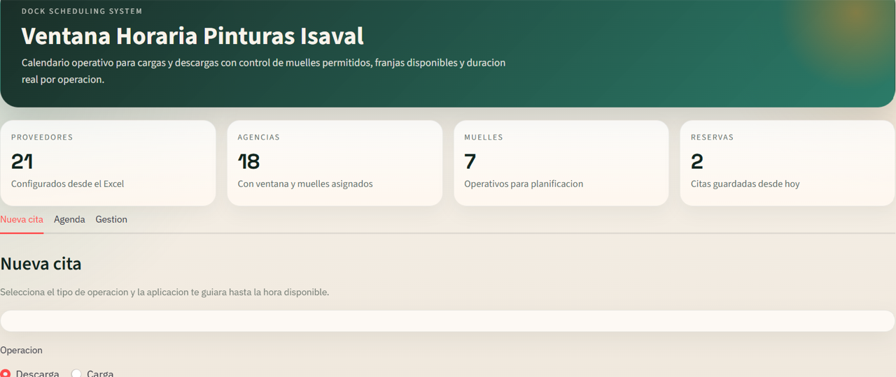
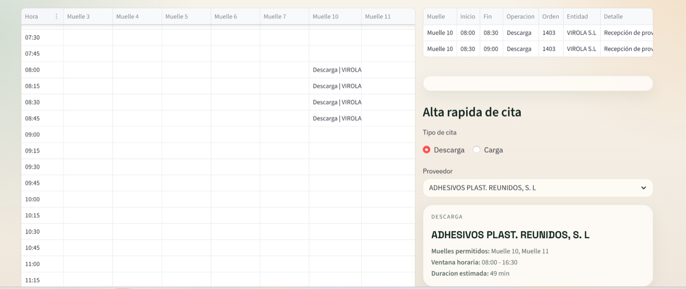
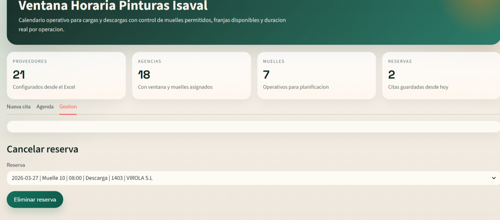

Logistics operations are experiencing saturation, especially because most agency loads concentrate between 17:00 and 19:00. This creates workload peaks that lead to operational stress and a degree of disorganisation.
In addition, product unloading, especially when bulky goods coincide several times on the same day, blocks preparation areas and significantly hinders daily operations.
The proposal is framed as more than a technology tool: it represents an operational model change toward intelligent planning of loading and unloading through a dock scheduling system.
The proposed workflow starts with a simple choice: select loading or unloading, display available schedules and book a slot. Depending on supplier and operation type, the system automatically assigns the required dock occupation time. The booking could also be cancelled if the agreed time cannot be met.



The proposal aims to professionalise dock management through anticipatory, distributed and traceable planning, reducing saturation peaks and building a base for continuous improvement supported by real operating data.